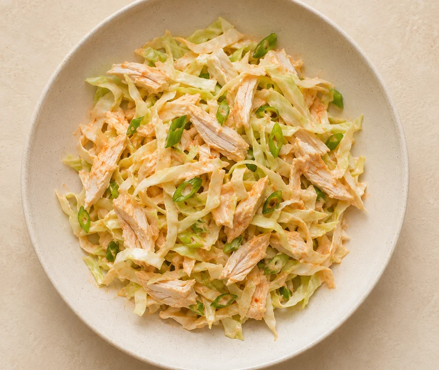

Рецепт 01
Курица и острый йогурт
Ингредиенты
- Белокочанная капуста: 120 г
- Готовая куриная грудка: 120 г
- Греческий йогурт: 40 г
- Зелёный лук: 10 г
- Острый соус: 1 ч. л. или по вкусу
Как приготовить
Нашинкуй капусту, разбери курицу на волокна и нарежь лук. Смешай йогурт с острым соусом и заправь салат.